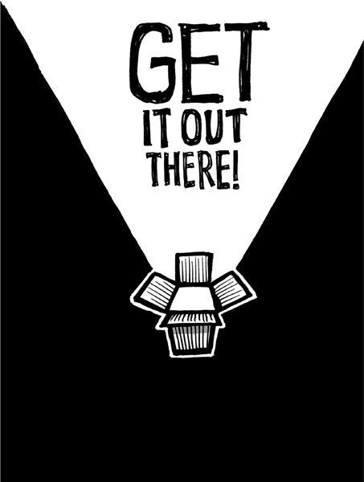

{% include JB/setup %}
{% raw %}
<div>

<h2 id="filepos100618" class="calibre19"><span class="calibre2"><a class="calibre13"></a><strong class="calibre14">Sell your by-products</strong></span></h2><div class="calibre4"></div>
<p class="calibre7">When you make something, you always make something else. You can't make just one thing. Everything has a by-product. Observant and creative business minds spot these by-products and see opportunities.</p>
<p class="calibre17">The lumber industry sells what used to be waste--sawdust, chips, and shredded wood--for a pretty profit. You'll find these by-products in synthetic fireplace logs, concrete, ice strengtheners, mulch, particleboard, fuel, and more.</p>
<p class="calibre17">But you're probably not manufacturing anything. That can make it tough to spot your by-products. People at a lumber company see their waste. They can't ignore sawdust. But you don't see yours. Maybe you don't even think you produce any by-products. But that's myopic.</p>
<p class="calibre17">Our last book, <em class="italic1">Getting Real</em>, was a by-product. We wrote that book without even knowing it. The experience that came from building a company and building software was the waste from actually doing the work. We swept up that knowledge first into blog posts, then into a workshop series, then into a .pdf, and then into a paperback. That by-product has made 37signals more than $1 million directly and probably more than another $1 million indirectly. The book you're reading right now is a by-product too.</p>
<p class="calibre17"><a class="calibre16"></a>The rock band Wilco found a valuable by-product in its recording process. The band filmed the creation of an album and released it as a documentary called <em class="italic1">I Am Trying to Break Your Heart</em>. It offered an uncensored and fascinating look at the group's creative process and infighting. The band made money off the movie and also used it as a stepping-stone toward reaching a wider audience.</p>
<p class="calibre17">Henry Ford learned of a process for turning wood scraps from the production of Model T's into charcoal briquets. He built a charcoal plant and Ford Charcoal was created (later renamed Kingsford Charcoal). Today, Kingsford is still the leading manufacturer of charcoal in America.<a id="filepos103114" class="calibre16"></a><a href="Rework_split_040.html#filepos107361" class="calibre9"><sup class="calibre20"><span class="calibre6">*</span></sup></a></p>
<p class="calibre17">Software companies don't usually think about writing books. Bands don't usually think about filming the recording process. Car manufacturers don't usually think about selling charcoal. There's probably something you haven't thought about that you could sell too.</p>
<p class="calibre3"><a class="calibre16"></a></p><div class="calibre4"></div>
</div>

{% endraw %}

